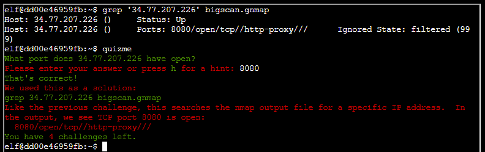
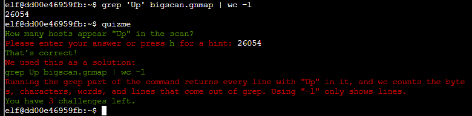
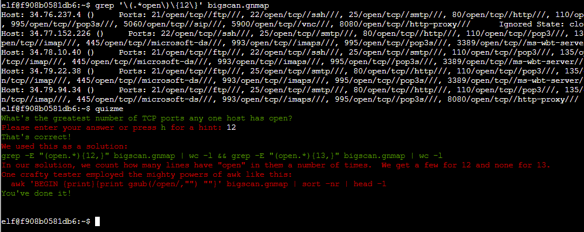

Just play the game! It's fun! Guess all the "True" statements.
- What port does 34.76.1.22 have open?
grep '34.76.1.22' bigscan.gnmap
62078
- What port does 34.77.207.226 have open?
grep '34.77.207.226' bigscan.gnmap
8080
- How many hosts appear "Up" in the scan?
grep 'Up' bigscan.gnmap | wc -l
26054
- How many hosts have a web port open? (Let's just use TCP ports 80, 443, and 8080)
grep -E "(80/open|443/open|8080/open)" bigscan.gnmap | wc -l
14372
- How many hosts with status Up have no (detected) open TCP ports?
echo $((`grep Up bigscan.gnmap | wc -l` - `grep open bigscan.gnmap | wc -l`))
402
- What's the greatest number of TCP ports any one host has open?
grep '\(.*open\)\{12\}' bigscan.gnmap
Just keep increasing the number until there are no results. The answer is 12.
First, activate the Wifi device by accessing your badge and activating it. This is the thing you picked up in the orientation area at the very beginning. Scan for access points, connect, and then go to the setup page for the thermostat.